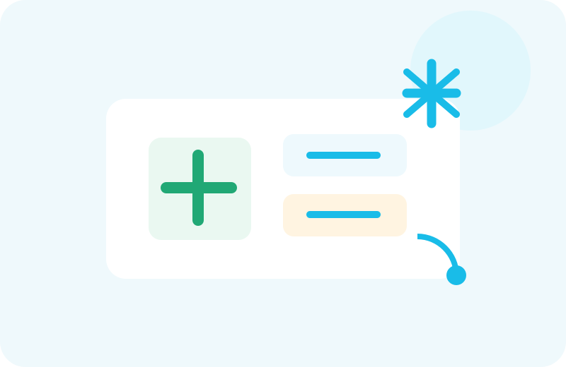

מדיקר עד הבית
משלוח תרופות עד הבית
האספקה היא החוליה האחרונה במעטפת של מדיקר: לאחר איתור, רכישה או יבוא התרופה, מדיקר מתאמת את מסירתה למטופל בהתאם לסוג התרופה ולתנאי ההובלה הנדרשים.

⌂
פריסה ארצית
אספקה ישירות למטופל בהתאם לאזור ולתנאי האספקה.
❄
תרופות בקירור
התאמת תנאי ההובלה לדרישות המוצר והשרשרת הלוגיסטית.
☎
ליווי ושירות
מוקד שירות וליווי רוקחי לפי הצורך.
איך מזמינים?
1
מעבירים מרשם/בקשה
2
מאשרים זמינות
3
מתאמים אספקה
4